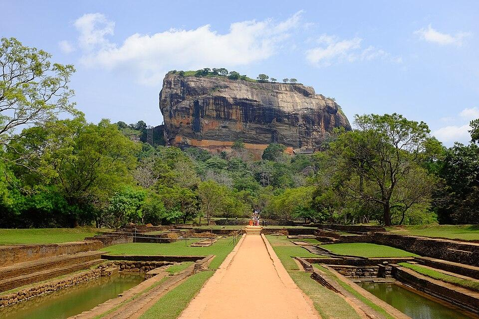
SigiriyaSigiriya
The 'Lion Rock', an ancient rock fortress and palace ruin surrounded by the remains of an extensive network of gardens, reservoirs, and other structures.
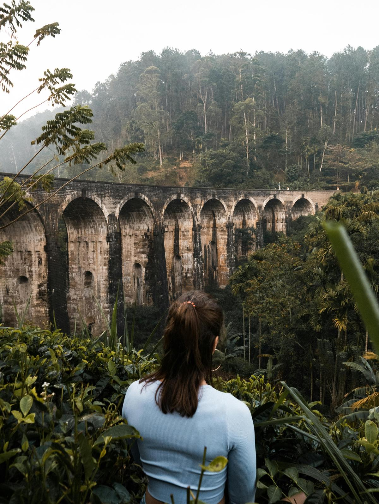
EllaElla
A small town in the Badulla District governed by an Urban Council. It is approximately 200 kilometres east of Colombo and is situated at an elevation of 1,041 metres above sea level.
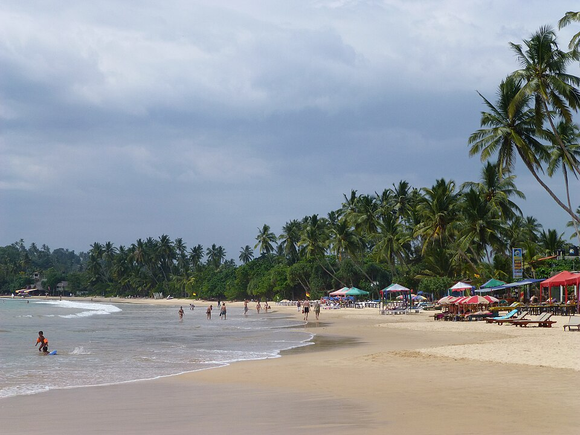
MirissaMirissa
A small town on the south coast of Sri Lanka, located in the Matara District of the Southern Province.
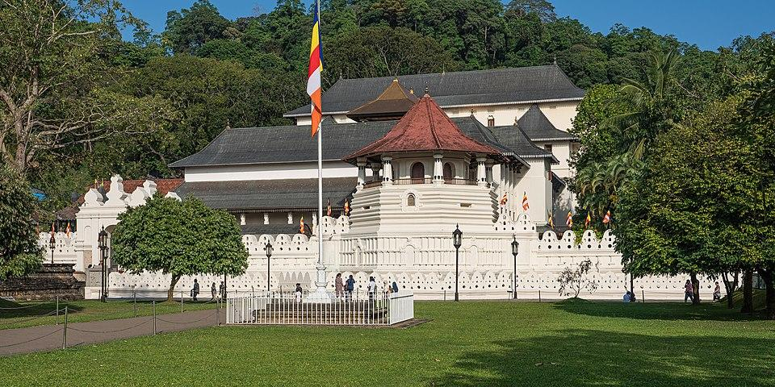
KandyKandy
A major city in Sri Lanka located in the Central Province. It was the last capital of the ancient kings' era of Sri Lanka.
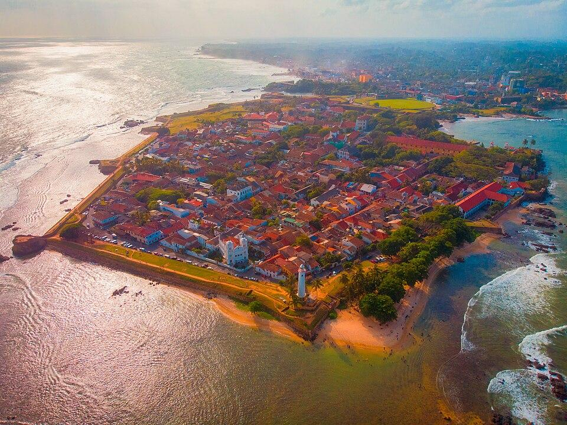
Galle FortGalle Fort
A fortification built by the Portuguese on the southwestern coast of Sri Lanka and later fortified by the Dutch.
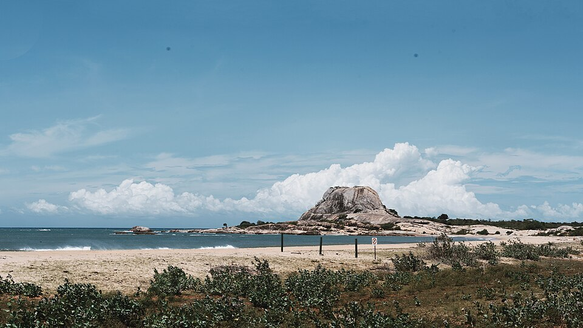
Yala National ParkYala National Park
The most visited and second largest national park in Sri Lanka, bordering the Indian Ocean.
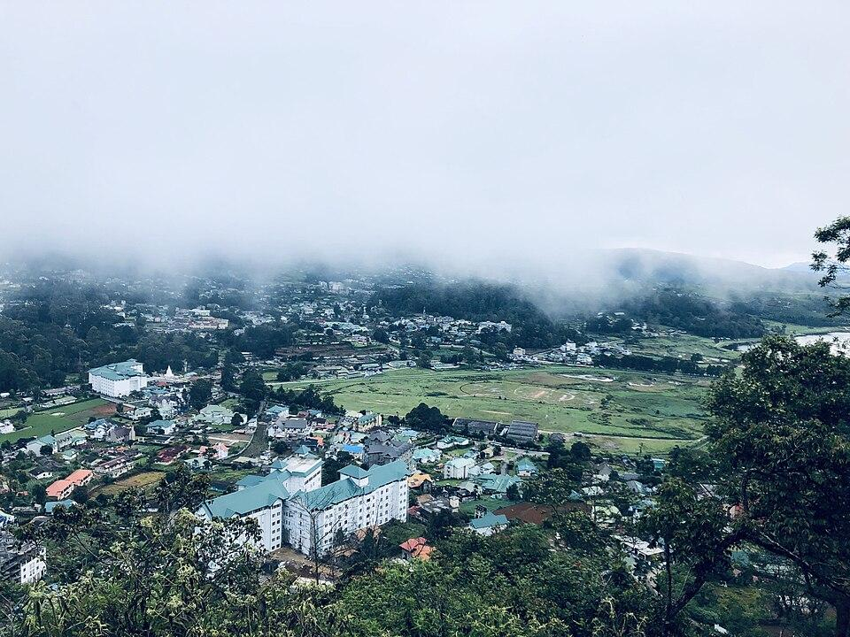
Nuwara EliyaNuwara Eliya
A city in the tea country hills of central Sri Lanka. The naturally landscaped Hakgala Botanical Gardens serves roses and tree ferns.
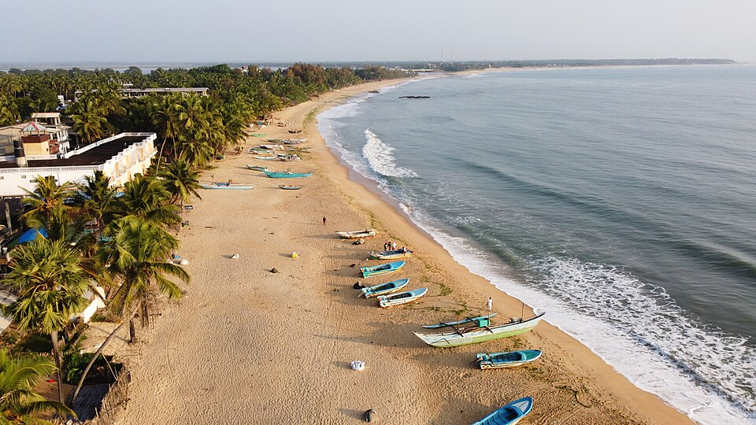
Arugam BayArugam Bay
A bay situated on the Indian Ocean in the dry zone of Sri Lanka's southeast coast, and a historic settlement of the ancient Batticaloa Territory.
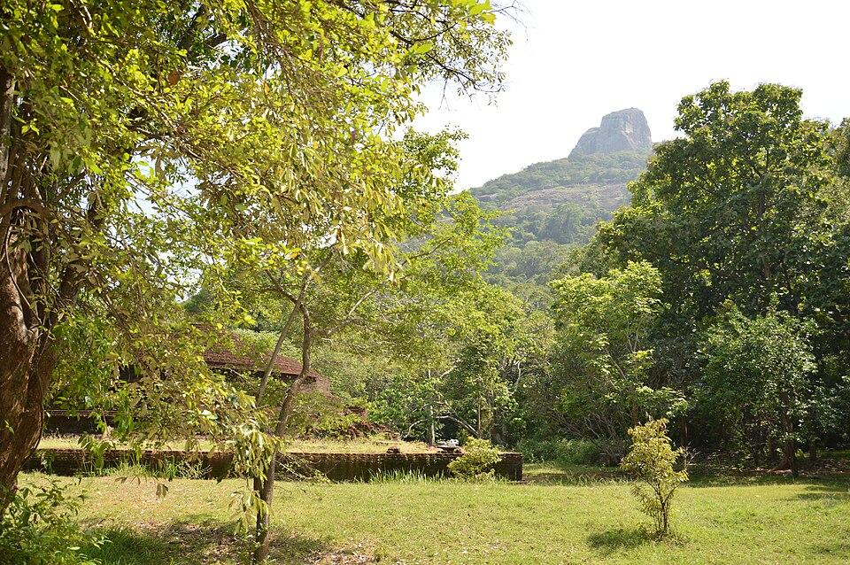
AnuradhapuraAnuradhapura
A major city in Sri Lanka. It is the capital city of North Central Province, Sri Lanka and the capital of Anuradhapura District.
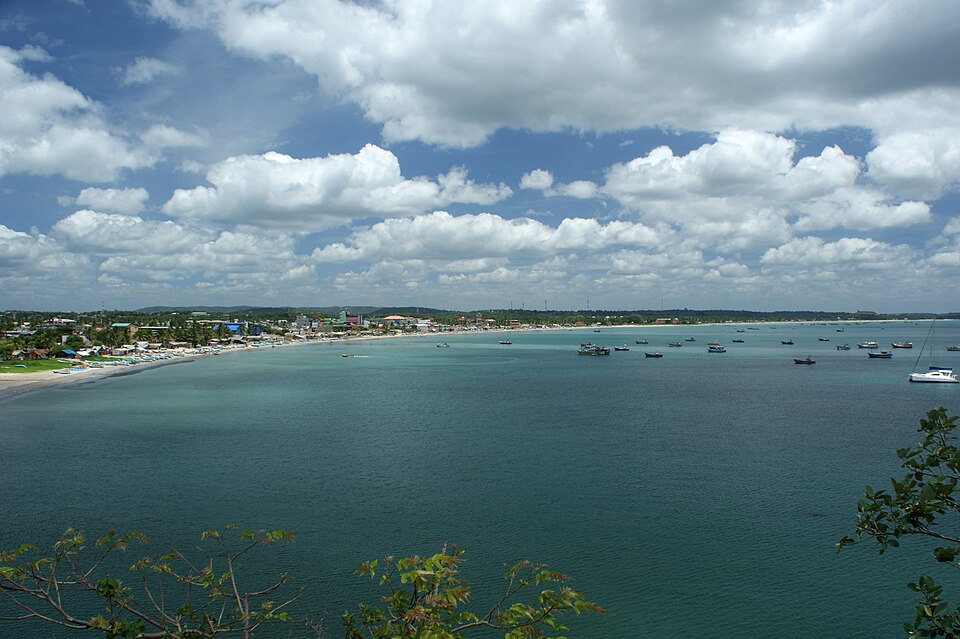
TrincomaleeTrincomalee
A port city on the northeast coast of Sri Lanka. Set on a peninsula, Fort Frederick was built by the Portuguese in the 17th century.
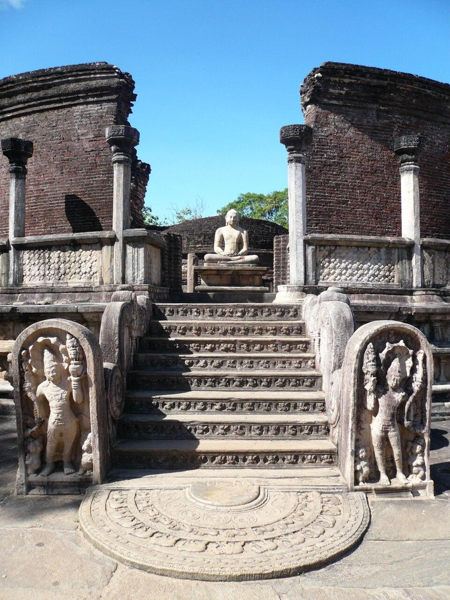
PolonnaruwaPolonnaruwa
The main town of Polonnaruwa District in North Central Province, Sri Lanka.
 Unawatuna
Unawatuna
Unawatuna
A coastal town in Galle district of Sri Lanka. Unawatuna is a major tourist attraction in Sri Lanka and known for its beach and corals.
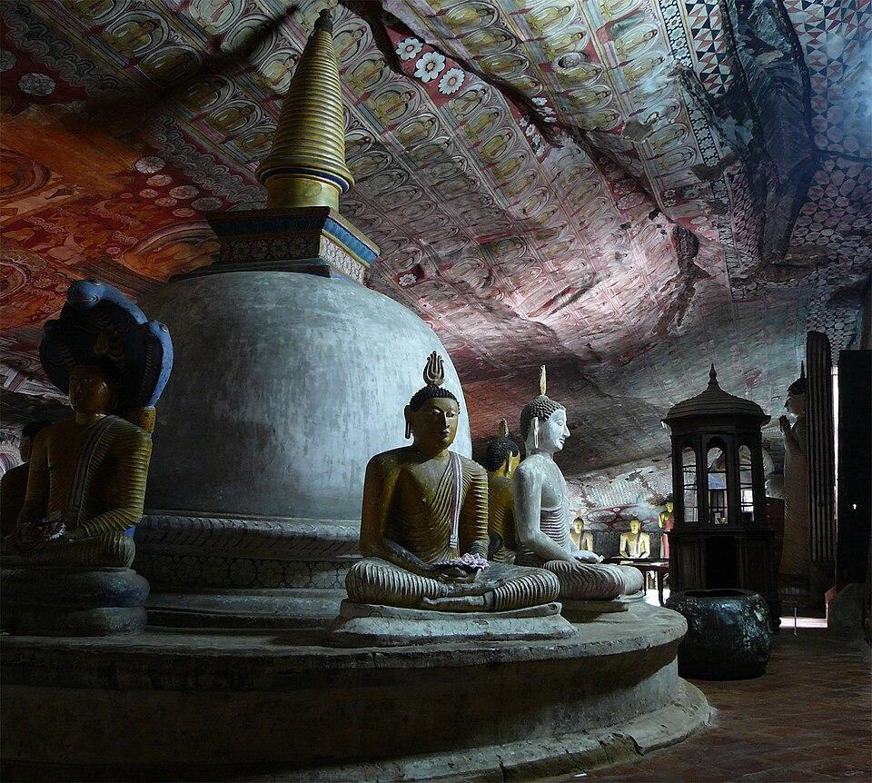
DambullaDambulla
A large town, situated in the Matale District, Central Province of Sri Lanka.
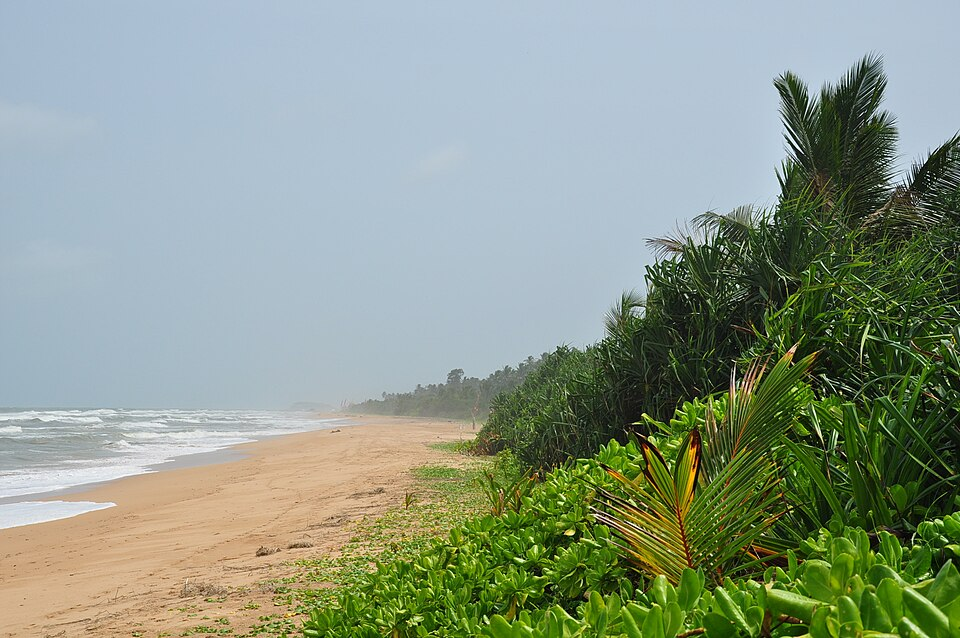
BentotaBentota
A coastal town in Sri Lanka, located in the Galle District of the Southern Province.
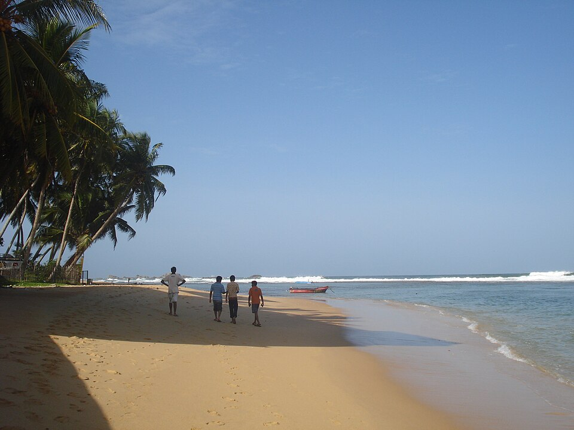
HikkaduwaHikkaduwa
A small town on the south coast of Sri Lanka located in the Southern Province.